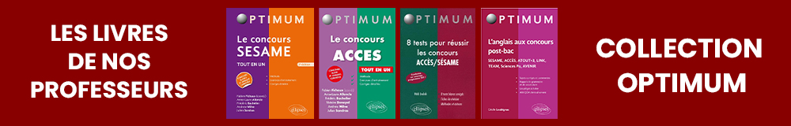

Épreuves écrites
Logique (1 heure)
Analyse documentaire et Connaissance des enjeux contemporains (3 heures)
composée de 2 grandes parties
Epreuve de langue (2 heures)
Un oral de langue
Sont testés le niveau d’expression et de compréhension ainsi que la personnalité du candidat.
Un entretien avec le jury